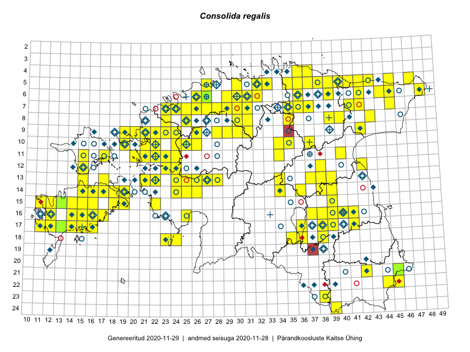

Consolida regalis
Uuendatud: 2016-12-01
Kaardile koondatud taksonid: Consolida regalis Gray

Kaart põhineb 168 kirjel.
Kuvatud viited 20 esimesele andmebaasikirjele, ülejäänud PlutoFis
- Toomas Kukk, Eerik Leibak: 2015-08-07: 16-15: GPS punkt
- Thea Kull: 2015-07-07: 16-40: ala
- Rein Kalamees: 2015-06-08: 05-32: ala
- Toomas Kukk, Eerik Leibak: 2015-08-09: 14-15: ala
- Toomas Kukk, Thea Kull, Timo Luhamäe, Ott Luuk, Peedu Saar: 2015-06-28: 13-26: ala
- Toomas Kukk, Eerik Leibak: 2015-08-10: 13-15: ala
- Tiit Hallikma, Toomas Kukk: 2015-07-21: 05-45: ala
- Peedu Saar: 2015-07-15: 15-39: ala
- Peedu Saar, Ott Luuk: 2015-07-27: 10-35: ala
- Peedu Saar, Eerik Leibak: 2015-07-30: 16-41: ala
- Peedu Saar, Liina Oja: 2015-07-21: 06-44: ala
- Peedu Saar: 2015-08-04: 14-36: ala
- Tiit Hallikma, Toomas Kukk: 2015-07-22: 05-47: ala
- Tiit Hallikma, Toomas Kukk: 2015-07-23: 07-41: ala
- Tiit Hallikma, Indrek Tammekänd, Toomas Kukk: 2015-06-08: 14-26: ala
- Rein Kalamees, Kersti Püssa: 2015-08-15: 05-37: ala
- Ott Luuk, Hannes Pehlak: 2015-07-21: 06-48: ala
- Ott Luuk, Hannes Pehlak: 2015-07-22: 07-45: ala
- Meeli Mesipuu, Kadri Tali: 2015-07-06: 16-17: ala
- Thea Kull, Eerik Leibak: 2016-07-24: 08-43: ala